На данном сайте вы можете найти рекомендации по книгам по жанрам с описанием книги и рецензиями на них
В данном сайте вы можете найти 8 жанров
1 книга) ТАИНСТВЕННЫЙ ПРОТИВНИК
Автор: Агата Кристи
Год: 1922
Описание: Это первый роман о забавных приключениях детективов-любителей Томми и Таппенс Бересфорд. Действие происходит в начале двадцатых годов прошлого века. Сладкая парочка молодых авантюристов, занявшись поиском загадочного документа, пропавшего после трагической гибели в 1915 году трансатлантического лайнера "Лузитания", оказывается замешана в гигантский международный заговор. Только находчивость "партнеров по преступлению" способна предотвратить новую мировую войну.
Рецензия: Насколько я понимаю, это одна из первых работ автора, и это чувствуется. Здесь нет привычных читателям Мисс Марпл или Эркюля Пуаро. Детективами-любителями выступают двое молодых людей Томми и Таппенс. И как не прискорбно сообщать, но меня они дико раздражали. Первую половину книги эта парочка вела себя как маленькие дети не способные мыслить и делать выводы. Потом, к счастью, добавилось несколько второстепенных персонажей и я перестала обращать внимание на странные поступки главных героев. Сам сюжет для меня показался немного скучным. Хотя, если начать его анализировать, то все будет не так плохо, но мне кажется автор не совсем правильно выбрала порядок описания некоторых сцен в истории (не получается сформулировать более логично). Ну и все же, я привыкла к более колоритным главным персонажам, а эта молодая пара казалась весьма заурядной, что тоже повлияло на мое восприятие.
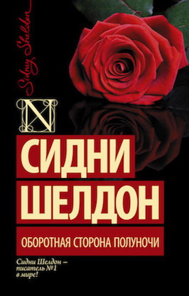2 книга) ОБОРОТНАЯ СТОРОНА ПОЛУНОЧИ
Автор: Сидни Шелдон
Год: 1990
Описание: Героине романа `Полночные воспоминания` - очаровательной молодой женщине - лишь благодаря счастливой случайности удается не стать жертвой кровавого убийства.
Рецензия: Несоответствие множества фактов и описаний, сплошные сюжетные ляпы, однообразие выражений и сюжетов.
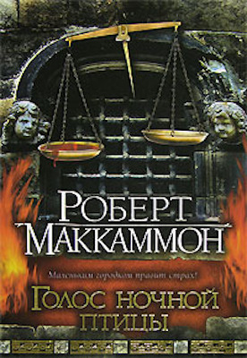3 книга) ГОЛОС НОЧНОЙ ПТИЦЫ
Автор: Роберт Маккаммон
Год: 2002
Описание: 1699 год. Американский юг. В маленьком городке Фаунт-Роял поселилось Зло. Зверски убиты местный священник и уважаемый фермер — и убил их не человек. Гибнут посевы. Много дней льет, не переставая, проливной дождь. Ядовитые испарения поднимаются от болот. Людей преследуют во сне кошмарные видения. Конец света уже близок. Настанет ли год от Рождества Христова 1700-й?.. Кто виноват? Ведьма! Точно так же было и в Салеме! Преступница поймана и брошена в тюрьму. Чтобы судить ее по всей строгости закона, из ближайшего города в Фаунт-Роял едут умудренный опытом судья Вудворд и его помощник, юный клерк Мэтью...
Рецензия: Эта книга произвела на меня огромное впечатление! Сюжет держал в напряжении до последних страниц. Странно. что при этом в книге мало по-настоящему страшных сцен. По атмосфере книга мне напомнила фильм "Трудно быть богом". Главный герой Мэтью - молодой, сообразительный парень выдающихся аналитических способностей. Несмотря на юность, ему довелось многое пережить в приюте. Меня тронула преданность Мэтью своему патрону и отеческая опека от магистрата по отношению к своему клерку. В книге довольно много отвратительных сцен, но есть и сцены очень трогательные, например, прощание Вудворта и Мэтью в конце книги. Интересно описана и главная героиня, Рэйчел - женщина с железным характером и горячим, благодарным сердцем. Все персонажи имеют свои положительные и отрицательные стороны, и эта объемность мне тоже понравилась. А еще в книге захватывающий сюжет. Финал открытый, одна история закончилась, но ясно, что жизнь Мэтью не будет тривиальной. Я обязательно буду читать продолжение.
1 книга) ГАРРИ ПОТТЕР И ФИЛОСОФСКИЙ КАМЕНЬ
Автор: Джоан Кэтлин Ролинг
Год: 1997
Описание: Одиннадцатилетний мальчик-сирота Гарри Поттер живет в семье своей тетки и даже не подозревает, что он - настоящий волшебник. Но однажды прилетает сова с письмом для него, и жизнь Гарри Поттера изменяется навсегда. Он узнает, что зачислен в Школу Чародейства и Волшебства, выясняет правду о загадочной смерти своих родителей, а в результате ему удается раскрыть секрет философского камня. В нашей библиотеке вы можете бесплатно почитать книгу « Гарри Поттер и философский камень ».
Рецензия: Почему-то до этого момента у меня возникало к книге намного меньше вопросов, хотя я перечитывала её всего пару лет назад. А сразу после прочтения седьмой части и по сравнению с ней первая история о Мальчике, Который Выжил выглядит сырой, недодуманной и слишком детской - но да-да, эта книга изначально была для детей. И это впечатление скорее говорит о том, насколько выросла история о Гарри Поттере по прошествии лет, как оброс подробностями и жизнью магический мир, захвативший так много читателей по всему миру. Большинство знают историю о Гарри, частично или полностью, так что спойлерить её весьма проблематично, и я тут порассуждаю над некоторыми моментами, которые привлекли моё внимание или вызвали недоумение в первой книге. О каких-то я уже слышала от других людей, другие пришли мне в голову лишь сейчас. Во-первых, как Хагрид попал на островов, куда дядя Вернон завёз Гарри и Дурслей? Он и Гарри уплыли на единственной лодке Дурслей (что оставляет вопрос как сами родственники Поттера смогли попасть домой, но тут, скорее всего, помог владелец лодки). Хагрид сказал, что "прилетел" (Flew). В последней части Хагрид говорит, что мётлы его веса не выдерживают, да и не было там никакой метлы, как и другого транспорта. Что приводит нас к выводу: Хагрид умеет трансгрессировать. Точнее, должен бы уметь, потому что другого объяснения этим событиям не нахожу, но почему тогда это не использовалось впоследствии? Главой позже Хагрид исчезает в толпе, стоит Гарри моргнуть, что с его габаритами непросто, что опять-таки должно навести на мысли о трансгрессии. Вообще если задуматься, вопросы перемещения в магическом мире были не очень-то и додуманы впоследствии: учитывая такой "чит", у магов слишком много другого транспорта, который непонятно зачем используется. Хотя если рассматривать это умение как то, чему не каждый способен научиться, может, это и имеет смысл. Во-вторых, система очков факультетов, точнее, их получение и снятие. В начале года катастрофой был штраф на один балл, потом счёт пошёл на десятки с куда большей лёгкостью - и в последующих книгах тоже. За то, что первокурсница пошла сражаться с троллем - минус пять очков, а за прогулку после отбоя - целых двадцать. В общем, градация очень расплывчатая и непонятная, из-за чего в принципе всё соревнование между факультетами становится сущей бессмыслицей. В-третьих, почему Полная Дама - портрет у входа в башню Гриффиндора, ни разу не сдала никого, кто бродил ночью по замку? Она же вроде "на стороне" учителей. Или всё-таки нет?) Вообще, портреты в замке обретают жизнь только когда это нужно для сюжета или увеличения градуса "волшебности". Одиннадцатилетние дети накосячили? Давайте подвергнем их смертельной опасности, отправив в лес, где живёт хрен пойми кто и что и куда им вообще-то тоже запрещено ходить, да ещё и ночью! Кто это придумал? Как это могло вообще прийти в голову хоть кому-то? Как много вопросов, как мало ответов. Ну и конечно, финальное испытание книги, буквально заточенное под трёх одиннадцатилеток. На самом деле, достаточно неплохое для детского произведения, но всё равно как-то немного разочаровываешься) А что в итоге? Я нежно люблю сагу о Гарри Поттере, но теперь посмотрела на её начало как-то иначе.
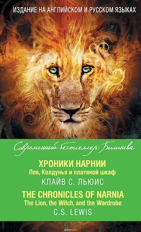2 книга) ХРОНИКИ НАРНИИ: ЛЕВ, КОЛДУНЬЯ И ПЛАТЯНОЙ ШКАФ
Автор: Клайв Стэйплзом Льюисом
Год: 1950
Описание: История о четырёх обычных детях (Питер, Сьюзен, Эдмунд и Люси). Они находят платяной шкаф в доме профессора Керка, который ведет в волшебную страну Нарнию, находящуюся под заклятьем злой Белой Колдуньи. Четверо детей выполняют древнее пророчество с помощью Аслана и добрых обитателей Нарнии, и освобождают Нарнию от Белой Колдуньи, вместе со свержением Белой Колдуньи в Нарнии кончается Долгая Зима, которая длилась целое столетие.
Рецензия: Когда за окном бушует осенний ливень. Когда дома кричат дети, слышится топот, гогот, хохот, грохот. В доме витает запах свежемолотого кофе, травяного чая и варенье уже ровным слоем лежит на бутербродах... я считаю свою воскресную миссию выполненной. Потому усаживаюсь в свое любимое кресло и... открываю дверь в волшебную страну. Сегодня это была Нарния. И о, сколько всего спряталось в этом слове! Мне было страшно, интересно, щемяще нежно (так вообще может быть?!), любопытно и крайне переживательно! Ух мне этот младший сынишка/братишка Певенси, скажу я вам! И финал, который заставил вздрогнуть, хотя фильм я смотрела уже много раз и точно знаю, чем там заканчивается. Сэр Льюис был рядом со мной все это время. Он взял меня, маленькую перепуганную девочку в легком хлопчатом платьице, за руку, чтобы показать все свое царство. Потому, когда на страницах появился гордый статный великий Аслан, я, прекрасно понимая, что перед читателями вообще-то лев, видела косматую голову автора. Удовольствие получила колоссальное! От всего :) От религиозных мотивов, от детской непосредственности, от скорости, с которой я скушала это произведение. Кстати, о последней. Если в начале меня мучали угрызения совести, что книга в первую очередь будет прочитана мной одной, а уж потом мои мальчики ознакомятся с нею; то по мере развития сюжета, эмоций еще и на это, не хватило. А сейчас так я даже рада. Ведь мой одиночный вояж позволил самой побыть девочкой-крошкой, что вряд ли возможно в сопровождении сыновей. Однозначно рекомендую всем любителям сказок! Здесь прекрасно все - магические существа, приключения, взаимоотношения между братьями и сестрами, Аслан. АСЛАН, и этим все сказано. Получился сумбурный текст, в отличии от того, который был прочитан несколько минут назад. Но это и не важно, потому что я-то его еще минимум разок обязательно прочитаю. Хотя кому я вру, возвращаться мне в волшебную страну Нарнию еще и еще!:) Кстати, тем, кто посмотрел фильм и думают, ну что там еще нового может быть. Книга гораздо интереснее и масштабнее. Как и должно быть :).
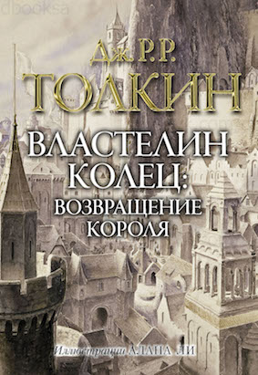3 книга) ВЛАСТЕЛИН КОЛЕЦ
Автор: Джон Рональд Руэл
Год: 1954
Описание: Трилогия "Властелин Колец" - одна из тех великих книг, встреча с которыми становится Событием Эпическая красота повествования, вечная тема борьбы Добра и Зла, большой подвиг маленького героя и, самое главное, - тот фантастический и вместе с тем удивительно реальный мир, в котором хочется остаться навсегда.
Рецензия: Говорю я сама себе перед очередным 100500м просмотром Властелина Колец, пародируя Сильвио из сериала Сопрано, пародировавшего Аль Пачино из Крестного отца) Но этим летом случилось страшное... Мне, дамочке, которая ни в жисть не возьмет читать книгу, если хоть одним глазком глянула по ней экранизацию, ни с того ни с сего резко приспичило прочитать данный эпос. Сказать, что я горько пожалела, что никогда не читала книгу до своих 26 лет, это ничего не сказать. Потому что, ну а зачем, если я и так знаю о чем там. Тем более, зная за собой особенность быстро уставать от толстых неспешных книг и, да и наслушавшись умников, говоривших, мол, ну это сказка для детей с кучей деталей и описаниями пейзажей. Хмммм... Опосля прочтения этого талмуда мой вердикт таков: да если у вас в башке есть хоть 5% воображения вам не может быть скучно читать эту книгу! Скажем, я объективно знаю насчет себя любимой, что у меня нет супер пупер крутого воображения, но! Даже мой средненький мозг выдавал не виданные до сих пор картинки) Что касается самой истории, моя внутренняя зануда больше всего полюбила главу про встречу с Древнем, который долго и обстоятельно вещает что тут да к чему. Это ж самое то! Главы про Совет у Элронда и встречу с Фарамиром - тоже вошли в топ-3 обожаемых мной глав. Оказалось, моей душе немного то для счастья нужно - сели бы все рассказчики за стол и по очереди как можно подробнее рассказывали мне свои чУдные истории (естессно, душа требует по быстрее дальше читать Сильмариллиона, но держусь, ещё эту историю не переварила). Много прекрасных слов хочется написать об этой книге, но, как водится, в нужный момент косноязычие одолевает и красивых фраз из нутра не выдавливается) Но это не значит, что не получила я колоссального удовольствия, пройдя весь этот путь с героями. Много чего и в моей жизни произошло за то время, что ушло на чтение ВК, но на душе становилось светлее когда я возвращалась к книге, слезы текли с периодичностью примерно на каждую вторую главу, а Гэндальф и Сэм успокаивали добрым словом, будто бы сказанным лично мне. А то, как было описано сияние и красота перворожденных эльфов и величие их Владык пробирало до мурашек и я физически испытавала самый настоящий трепет перед ними. Не думаю, что стоит слишком много слов говорить о самой истории, ведь каждый обращает внимание на что-то своё. Да и впечатления мои банальны - каждому нужен такой друг как Сэм, каждый хочет иметь такого же наставника как Гэндальф, каждый хочет видеть человека, наделенного властью таким как Арагорн или Фарамир, каждому приятно иметь в своём окружении таких веселых друганов как Пин и Мерри, и Леголас и Гимли) Ну и главное - это надежда) Кстати, Фродо в книге раскрылся для меня совершенно по новому, его бремя, его воля, его самопожертвование. Да честно говоря, все персонажи раскрылись и дополнились. Книга закончилась так, что даже мне, дамочке, говорящей, что если я когда нибудь захочу ребёнка, ткните меня чем нибудь по больнее, и никогда не думающей о таких вещах, захотелось семью в этой самой Хоббитании, чтоб её! Вот такое сделал со мной профессор! Короче говоря, после книги остался в моей душе один сплошной восторг, ощущение прикосновения к чему то прекрасному и благодарность Толкину за то, что он позволил мне побывать в его мире) Перечитывать буду однозначно! Теперь они меня затащили не только в экранизацию, но ещё и в первоисточник!
1 книга) ГРАФ МОНТЕ-КРИСТО
Автор: Александр Дюма
Год: 1884
Описание: Сюжет "Графа Монте-Кристо" был почерпнут Александром Дюма из архивов парижской полиции. Подлинная жизнь Франсуа Пико под пером блестящего мастера историко-приключенческого жанра превратилась в захватывающую историю об Эдмоне Дантесе, узнике замка Иф. Совершив дерзкий побег, он возвращается в родной город, чтобы свершить правосудие - отомстить тем, кто разрушил его жизнь.
Рецензия: "Заставляет ли Дюма думать? - Редко. - Мечтать? - Никогда. - Лихорадочно перелистывать страницы? - Всегда", - писали еще при жизни писателя. Действительно, нельзя отказать Дюма в мастерстве заканчивать главу на самом интересном месте, так что поневоле читаешь дальше, а вот уже и ночь на дворе... Может, кто не знает, но роман не сразу воплотился в образе толстой книги или двухтомника. Писатель изобрел жанр романа-фельетона: его сочинения печатались из номера в номер в газетах и способствовали увеличению их тиражей. Я попала под магию Дюма: на протяжении двух недель прочтения я практически не смотрела свои любимые дорамы, найдя себе достойную замену для досуга. Это великая книга, поэтому сюжет известен даже тем, кто не читал романа. 19летний моряк Эдмон Дантес - предательство - заточение - аббат Фариа - сокровище - месть. Вот те самые ключевые слова. Согласна с теми рецензентами, кому больше всего нравится первая треть романа, в которой изображены страдания героя. Невозможно не испытывать эмпатии к персонажу, не сопереживать ему. Так же согласна со всеми, кто пишет, что это история мести, выношенной, отточенной, тщательно продуманной. Но не только месть определяет повествование этого романа - нравственные вопросы неоднократно поднимаются в нем. К примеру, аббат Фариа отказывается при планируемом бегстве убить охранника, даже если бы убил его Дантес. Это история о нравственном выборе человека. Уничтожить своих врагов или помиловать? Приравнять себя к божеству или смиренно склонить голову? Уйти из жизни или дать возможному счастью шанс? Немного снизила оценку, потому что для каждой хорошей книги есть свое время. История страстей, череда приключений больше отзываются в юношеской душе. А в 35 лет высший балл ставишь, как правило, отнюдь не романтическим книгам. Хочу отметить столь красивое издание от издательства Азбука, серия "Больше, чем книга": столько иллюстраций художников 19 века, почти на каждой странице.
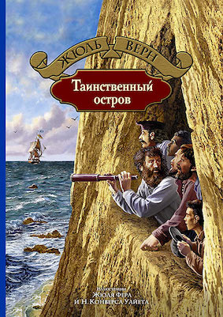2 книга) ТАИНСТВЕННЫЙ ОСТРОВ
Автор: Жюль Верн
Год: 1875
Описание: 1865 год. Гражданская война в США. Пятеро северян бегут из Ричмонда на воздушном шаре, спасаясь от окруживших город конфедератов. Внезапно налетевшая буря путает все планы беглецов. Воздушный шар сбивается с курса и героев выбрасывает на необитаемый остров в Тихом океане. Теперь им предстоит выжить в суровых условиях. Маленькая команда сплачивается вокруг незаменимых умений талантливого инженера Сайерса Смита. Каждый вносит свою посильную лепту в общее дело, в надежде вернуться в цивилизованный мир. Но, кажется, сам остров таит в себе тайну и за потерпевшими крушение наблюдает кто-то посторонний.
Рецензия: В отпуске захотелось перечитать «Таинственный остров» Жюля Верна. В робинзонаду ещё входят «Дети капитана Гранта» (написан в 1865 г.) и «Двадцать тысяч льё под водой» (1869 г.) Доберусь и до них Книга к тому же оказалась с иллюстрациями (рисунки П. Луганского) - новосибирское издательство «Детская литература»(1980). Рисунки чёрно-белые, но это совершенно не умаляет их образности и своевременности появления в тексте. Впервые с историей пяти аэронавтов я познакомилась в подростковом возрасте. Тринадцать лет – пора мечтаний; фантазировала тогда о том, что сама стану путешественницей и побываю на всех материках Земли. Помнится, прочитала книгу быстро, торопилась узнать, что же будет в финале, спасутся ли герои? В девяностые годы двадцатого века мобильные телефоны, компьютеры и интернет были у единиц, так что ходила в библиотеку и книжные магазины. Народ в то время ещё не избалован доступностью электронных книг, количеством фильмов с суперэффектами и видеоиграми, заменяющими реальность. Чтение оставалось, наверное, тем увлечением, которое позволяло пересекать видимые границы и бороздить просторы морей и океанов, галактик и Вселенной. Что говорить о шестидесятых годах девятнадцатого века? Времени, когда в свет вышел «Таинственный остров». Часто путешествовать на поездах и пароходах могли себе позволить не все, поэтому мир познавали через книги, газеты, энциклопедии и рассказы тех, кому посчастливилось где-нибудь побывать. Истории Жюля Верна стали для подростков (и конечно же взрослых!) окном, в котором можно посмотреть на другие страны. Жюль Верн и сам был изрядным любителем путешествий (в детстве даже хотел сбежать в Индию). Будучи взрослым, писатель стал членом Французского географического общества, посетил множество стран, многим интересовался и изучал, чтобы потом описать в своих историях. В книгах Верна будущее стало ближе – подводные лодки, скоростные автомобили, небоскрёбы… Герои «Таинственного острова» тоже много знают. Гедеон Спилет – репортёр по профессии. Человек бесстрашный, эрудированный, решительный, объехавший свет. Тот, кто может быстро разобраться во сложных вещах (это определение подходит для каждого персонажа книги). Ему даже пришлось стать врачом на острове. Бонадвентур Пэнкроф. Моряк. Это для меня самый живой персонаж, так как его реакции понятны, человечны и просты. Грустно – расстраивается. Весело – смеётся. За словом в карман не лезет. Имеет большой опыт. Сшить одежду? Пожалуйста! Построить корабль? Запросто! Верный друг и товарищ. Любил говорить: «О воображение, ты всемогуще, когда тебя подкрепляет вера!» Были моменты, когда я думала, что славный моряк съест всю дичь на острове...потому что аппетит у него был ого-го! Его стараниями численность редких представителей флоры и фауны уменьшилась. Герберт – воспитанник Пэнкрофа. Юноша, интересующийся всем – флорой, фауной, химией, физикой, астрономией. Начитан. Ответственен. Почтителен к взрослым. Парню досталось на острове больше всего, но он стойко перенёс всё, что с ним произошло. И не верится, что такие люди бывают. Идеальный образ юношества. Ещё когда в первый раз читала книгу, то поняла, что вряд ли бы так смогла. А в реалиях двадцать первого века…Трудно представить, что кто-нибудь выжил бы на необитаемом острове в течение четырёх лет без благ цивилизации и помощи интернета. Сейчас навигаторы, планшеты с умными опциями, информационные «облака». С одной стороны – прогрессивная техника облегчает нам жизнь, с другой – мы становимся от неё слишком зависимыми. Сайрес Смит. Инженер. Тот, на кого надеются аэронавты. Тот, кто всё знает. Действительно всё. Сумел провести телеграф на острове, вычислить точные координаты Острова, построил мельницу, добыл железную руду ,порох… С таким Человеком не страшно оказаться на необитаемом острове, ведь спасёт из любой непредвиденной ситуации. Этот персонаж на протяжении всей истории сохранял ореол недосягаемости. Умён. Силён. Справедлив. Жюль Верн воплотил в нём лучшее, что могло быть в человеке Будущего. Будущего, где Знания стоят на первом месте. «С Сайресом у них ни в чём не могло быть недостатка. С ним невозможно было потерять надежду». «Инженер верил в будущее потому, что чувствовал себя способным вырвать у этой дикой природы всё необходимое для своей жизни и для жизни своих товарищей…» Наб. Слуга Смита. Верный. Добрый. Отличный повар. Образ этого героя так же кажется более человечным, потому что его мысли просты и понятны. Айртон. Бывший пират. Непростой образ. Парень по молодости наделал много серьёзных ошибок и получил по заслугам. Двенадцать лет он провёл на Таборе в изгнании, почти одичал и потерял человеческое лицо. Но стараниями таинственного благодетеля Острова и аэронавтов получил второй шанс в жизни. «…необходимость – лучший учитель, и её больше всех слушаются». Из главы в главу аэронавты учились новому – строгали, пилили, занимались отделкой, изготовляли мебель, посуду, шили одежду. «Но любовь к родине владеет сердцем человека с непреодолимой силой…». Остров Линкольна стал для поселенцев вторым домом, который они полюбили, сделали уютным, удобным и процветающим. И всё же их тянуло домой, мысль вернуться на родину не давала им покоя. На таинственном острове был и таинственный благодетель. Он выручал поселенцев в самые трудные моменты, а таких было предостаточно. То пираты нагрянут, то лекарства надо достать, то спасти собаку Топа… Под конец истории, как и положено, имя это человека стало известно. Инженер Смит с товарищами давно хотел встретиться и поблагодарить его за то, что он несколько раз спас им жизнь. «В великодушной помощи, которую оказывают скрытно, избегая всяких изъявлений благодарности со стороны тех, кому оказывают благодеяние, есть известная доля высокомерия…» «Так уж устроен человек. Потребность созидать, оставить свой след на земле, вложить свою душу во что-то большое, что будет жить долго, переживёт его, - вот превосходство человека над всеми животными, населяющими нашу планету. Вот почему человек стал венцом творения, вот что оправдывает его господство над миром животных». Эта мысль прошла красной нитью через всю историю. Созидательная идея. Как бы хотелось, чтобы так и было. Только это мечты, прекрасные Мечты! Глобальное потепление, острова мусора, плавающие в океанах, длинные списки животных в «Красной» и «Чёрной» книгах… Венец природы забыл, что ответственен перед всем живым на Земле. Хочется верить, что, если подростки будут читать такие Книги, то наш мир изменится. Идеалы – это совсем не плохо, это ориентир в том мире, в котором мы живём. К хорошему надо стремиться. Хорошее в себе надо воспитывать!
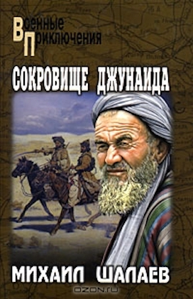3 книга) СОКРОВИЩЕ ДЖУНАИДА
Автор: Шалаев Михаил Васильевич
Год: 2008
Описание: Изо всех сил уходит от преследования красноармейцев потрепанный отряд знаменитого Джунаид-хана. Но враг все ближе, а груз тяжел… И вот уже пески пустыни укрывают бесценное сокровище. Пройдут годы, и тайна последнего похода басмача сплетёт в единый клубок судьбы бывшего прапорщика Деревянко, презирающего беспредел Упыря, ссыльной Гульнары, участкового Порсы и многих других людей…
Рецензия: Хорошая и интересная книга, советую читать эхту книгу кто любит приключенческий жанр
1 книга) ВРЕМЯ СВИНГА
Автор: Зэди Смит
Год: 2016
Описание: Две девочки вместе занимались танцами, но потом обе вошли во взрослую жизнь, и их дружба распалась. Одна из них ушла в мир шоу-бизнеса и стала ассистенткой всемирно известной певицы Эйми. Вместе с группой певицы героиня отправится путешествовать по всему миру и узнает, как живут звёзды. Участвуя в благотворительной кампании в Африке вместе с Эйми, она вернётся к своим корням. Но это возвращение грозит опасностью: вся жизнь может перевернуться в одно мгновение. Делает ли происхождение человека от рождения ущербным, уменьшая его шансы на личное счастье?
Рецензия: Современная английская писательница Зэди Смит работает в жанре социального романа. Главная тема в её книгах: интеграция эмигрантов среднего класса в новой стране, повседневная жизнь, проблемы, новое молодое поколение и связи с исторической родиной. Лондон – один из моих любимейших городов для посещения в отпуске. В своё время дебютный роман Зэди Смит «Белые зубы» открыл мне целый мир «понаехавших» в Лондон, позволил заглянуть в дома, на кухню и в головы к тем людям, которых я встречала на улицах, а чаще за прилавками магазинчиков и кафе в столице Британии. «Время свинга» рассказывает историю девушки, рождённой от смешанного брака ямайской эмигрантки и англичанина (привет автобиографичность). Нам покажут школьные годы с их открытиями и обидами, студенческое время полное смутных надежд, некоторые неизбежные разочарования при вступлении во взрослую жизнь и работа, которая создаёт у свежеиспечённой молодой специалистки обманчивое впечатление нужности и незаменимости. Написано хорошо, жизненно, можно сопереживать. Главная героиня попадает в свиту к одной всемирно знаменитой певице, и мы попадаем в мир селебрити. Здесь автор рассказывает, как устроена работа людей одного племени с Майклом Джексоном или Эми Уайнхаус. Жизнь вырисовывается блестящая, но выматывающая: творческая натура, всегда в поиске вдохновения; всегда на колёсах; больше денег, чем полезно здоровья (трудно представить, да), и окружение из толп поклонников и прихлебателей, из которых нужно магическим образом выхватить нужных людей. Ближе к середине книги стало понятно, что русский перевод читается плохо, коряво. Я перебралась в оригинал, и там мне понравилось больше. Упомянутая поп-звезда затевает гуманитарную миссию в западноафриканской стране. Эта часть книги позволяет заглянуть в мир без водопровода, медицины и образования, зато с песнями, плясками и пожизненным президентом. Видимо, автор хотела показать, почему люди согласны стать «понаехавшими» в чужую страну, лишь бы увидеть в будущем хоть какую-то надежду. Есть ещё менее раскрытая, но более интересная для меня сюжетная линия – политическая карьера матери главной героини. Трудно даже вообразить себе объём самостоятельной учёбы и чёрной общественной работы, которую ей пришлось проделать, чтобы из трущоб перебраться в парламент. И вопрос, есть ли в этой самоотверженности смысл (хоть общественный, хоть личный), остаётся открытым. В аннотации роман описан как «бездна отчаяния». Я не соглашусь, не такая уж и бездна. Жизненный опыт героини действительно полон разочарований и крушений, однако, это опыт. Героиня молода, и может пережить процесс «открытия глаз» на себя и на окружающий мир. При некоторой ловкости и приложенных стараниях можно найти своих людей, своё место и даже получить удовольствие.
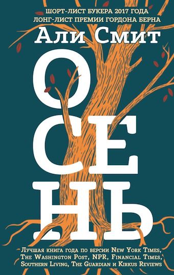2 книга) ОСЕНЬ
Автор: Али Смит
Год: 2016
Описание: Это роман о жизни в Великобритании после Брексита, об осени королевства и о том, какие изменения происходят в людях после недавних общественных событий. Политическую тему писательница соединила с сюжетом о любви Дэниэла и Элизабет, которые познакомились, когда ей было 11, а ему – 80 лет. Книгу уже назвали первым великим романом эры пост-Брексит о сломе времён и неясном будущем Британии. Она входит в амбициозный «сезонный» проект Али Смит – помимо «Осени», уже вышли «Зима» и «Весна».
Рецензия: Книга хороша, но меня она зацепила не полностью. Были моменты, которые я слушала во все уши, были моменты, которые прошли вскользь и в памяти не остались. Структура романа не линейная. То читатель оказывается в детстве героини, то она уже взрослая. И при этом через истории из её жизни, из историй людей, связанных с нею, автор показывает свою точку зрения на социальные и арт-процессы. Будь то равноправие, отношения между людьми вне рамок пола, возраста. При этом даётся экскурс в историю искусства, в период ярких происшествий и ломания рамок и границ в искусстве. Немного было неудобно слушать книгу в том плане, что автор писала немного рублено, диалоги были оформлены как в пьесах. Мама: «тут слова персонажа», я: «слова персонажа». Было трудновато это именно слушать. Именно из-за такой структуры не очень люблю читать пьесы. Мне больше нравится читать художественные моменты, например, мама сказала тихим голосом «слова персонажа», на что я ответила «слова персонажа». Ибо просто слова как в пьесе/сценарии для меня суховаты. Не вся книга так написана, нет, но были такие моменты и мне было некомфортно. В целом, роман хороший, но продолжать цикл я не планирую. Пока у меня не то настроение, не для такого чтения. Слушала в исполнении Натальи Коршун. Читает хорошо, приятный голос, интонации и тембр. Ошибок не заметила, в меру эмоционально, но какого-то яркого деления голоса на персонажей не приметила. Слушала на скорости 2,1, дискомфорта не было..
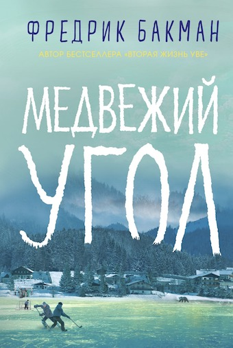3 книга) МЕДВЕЖИЙ УГОЛ
Автор: Фредрик Бакман
Год: 2016
Описание: Бьорнстад – Медвежий угол – крошечный городок на таёжном севере Швеции, дальше только лес и замёрзшее почти три четверти года озеро. В городке есть загибающаяся фабрика, магазин, школа и хоккейный стадион, на котором тренируется юниорская команда – главная достопримечательность, гордость и смысл существования городка: однажды ей досталось аж второе место на чемпионате страны. Кевин – восходящая звезда хоккея, Мая – дочь спортивного директора. На вечеринке после победы в четвертьфинале происходит непоправимое… и Бьорнстад ополчается против жертвы, отнявшей у города будущее. Успеет ли Бьорнстад прийти в себя до того, как станет слишком поздно? Обретёт ли новое будущее? После добрых трагикомических книг про Уве, бабушку и Бритт-Мари Фредрик Бакман пишет острую социальную драму. Здесь и размышления об ответственности за тех, кого мы воспитали, и вопрос, что важнее – судьба города или человека, и капкан дружбы. Впрочем, фирменный бакманский юмор, к которому мы привыкли, тоже там будет, но немного другой – более зрелый и с горчинкой.
Рецензия: Планомерно прочитывая одну книгу Бакмана за другой, я была удивлена. "Медвежий угол" не похож на предыдущие книги, не смотря на общие составляющие. Маленький городок, простые люди, обычная жизнь. Но, другие книги оставляют после себя ощущение теплого солнышка, не смотря на события, которые в них происходят. Здесь же, даже с условием относительного хэппи энда, солнышком и не пахнет, остается только грусть. Даже если на первый взгляд покажется, что эта история про хоккей, ничего подобного. Хоккей только для фона, а на переднем плане подростки, которым в один день пришлось повзрослеть. И окружающие их взрослые, которым пришлось принимать сложные решения. А еще в истории много стыда и гордости, любви, сочувствия и страха. А еще совсем чуток чести и совести.
1 книга) МОБИ ДИК
Автор: Герман Мелвилл
Год: 1851
Описание: Эпичная история о яростной, граничащей с безумием ненависти капитана Ахава к белому кашалоту полна христианских аллюзий и тонких метафор. Через них раскрывается весь спектр отношений человека с Богом, природной стихией и самим собой. Помимо глубокого философского подтекста, роман ценен с культурно-исторической точки зрения. Ни из одной художественной книги вы не узнаете так много о китобойном промысле, как из романа Мелвилла.
Рецензия: Я отношусь с большой настороженностью к произведениям типа "Must have" - обязательно прочитать, иногда они на мой взгляд сильно переоценены, либо я до них не доросла. И это произведение я добавила тысячу лет назад в список к прочтению, купила книгу, но всё откладывала на потом, и попозже... Тем более объём пугал и по описанию я ожидала только затянутости и излишней продолжительности... При том, что начало и сама тематика меня никак не удивили (было немного тоскливо и тягуче), послевкусие уже после прочтения осталось горько-сладким... Как от чего-то по-настоящему стоящего, ценного и важного. И вроде ничего сногсшибательного в книге нет, ничего чего нет в других романах, но у романа как будто есть сердце...И оно дотрагивается до твоего и переворачивает его. Сам сюжет похож на приключенческий роман. Хотя в процессе не раз затрагиваются острые социальные темы того времени. Ещё всё хотелось убить капитана... Кроме того много назидательного и нравоучительного. И впечатляет видение автором темы о жизни,о бытие, о китах...
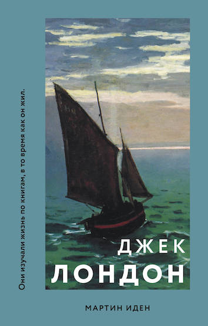2 книга) МАРТИН ИДЕН
Автор: Джек Лондон
Год: 1909
Описание: Самый сильный и глубокий роман Лондона можно назвать отчасти автобиографичным: между писателем и Мартином Иденом есть много общего. Возможно, именно поэтому книга получилась столь увлекательной и философски проблематичной. Автор пытался найти ответы на вопросы, волновавшие в течение жизни именно его. «Мартин Иден» является самой любопытной попыткой американской литературы совместить европейскую ницшеанскую этику с актуальными религиозными и социально-гуманистическими учениями. Роман даёт точный ответ, почему ждать прихода сверхчеловека бессмысленно. С любой стороны Атлантического океана.
Рецензия: Писатели - народ не простой. Одним палец в рот не клади, дай только волю, и они напишут что угодно, лишь бы вырваться на волне "хайпа" на самый верх. Вторые попроще, строчат романы в тишине, при свете оплавленной свечи, скрупулезно выстраивают сюжетные ходы и совсем не заботятся о популярности. Первые творят массовый продукт, про который забудут сразу после прочтения. Вторые же творят Литературу с большой буквы "Л". Именно они развивают жанр, и получают признание, как правило, лишь после смерти. Мартин Иден, необразованный, диковатый и грубый моряк, занял место между первыми и вторыми. Всего одно роковое событие изменило его судьбу раз и навсегда, заставило свернуть с проторенного пути и пойти новой, самой трудной дороге Писателя. Этим событием стала, конечно же, любовь… Эта книга, на самом деле, преисполнена смыслами. Одни увидят в ней оду фальшивому блеску капитализма, другим понравятся долгие философские размышления о человеке и его месте в мире, третьи сочтут её за инструкцию "как стать писателем без регистрации и смс". Но на самом деле, эта книга о любви. Об её восхитительной способности окрылять человека. Она делает способным совершать подвиги, сворачивать горы и крушить само мироздание! Но ещё эта книга и о разрушительной силе любви. О том, что остаётся, когда пламя страсти и чувств вдруг потухнет… О том, что происходит когда ты понимаешь - ты любил лишь придуманный образ, который мало похож на реальность. Мне это знакомо. А вам? Ещё на первой трети книги я понял, чем она закончится. И я оттягивал чтение до последнего. Не хотел оказаться правым! Но все же оказался… Настоящий Писатель пишет о мире, о людях, о нас с вами. Но никогда не сможет стать полноценной частью этой жизни. И то, чем кончается Мартин Иден, на мой взгляд, это лучшее окончание долгого и непростого писательского пути… Книга заняла достойное место среди моих любимых..
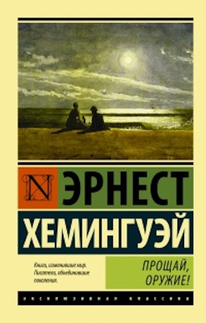3 книга) ПРОЩАЙ, ОРУЖИЕ!
Автор: Эрнест Хемингуэй
Год: 1929
Описание: Чистое, светлое чувство между американским солдатом и английской медсестрой возникает в условиях безжалостной мясорубки. В ней же чувствам и суждено потухнуть. Этот антивоенный роман — яркий представитель литературы «потерянного поколения». После его прочтения проникаешься столь сильным отвращением к смерти, которую сеют люди, что понимаешь, литература — самое действенное средство против войны.
Рецензия: "Тебя просто швыряют в жизнь и говорят тебе правила, и в первый же раз, когда тебя застанут врасплох, тебя убьют. Или убьют ни за что, как Аймо. Или заразят сифилисом, как Ринальди. Но рано или поздно тебя убьют. В этом можешь быть уверен. Сиди и жди, и тебя убьют." Это основная мысль, тезис и корень мысли Хемингуэя. Когда я читала роман, у меня возникало чувство, что книжная Кэтрин старше героя. И я пошла за ответом в биографию Эрнеста. Действительно, его реальная возлюбленная медсестра была старше мальчика на шесть лет. И я поняла, почему счастье книжных героев так закончилось, ведь избранница Эрнеста обвенчалась с итальянцем... Он написал то, что называется водоворот жизни. Мы как неприкаянные, плывем по течению, которым руководят свыше. Чего-то хотим, к чему-то стремимся, но не от нас зависит. Все, что мы можем -- учением или другими путями слепить из себя того, кого хотим видеть в зеркале. Упиваться этим и наслаждаться каждым днем. А остальное -- тьма, дно без света. Мы платим за свое существование -- жалко оно или нет, плата высока. "Вот какой ценой приходится платить за то, что спишь вместе. Вот когда захлопывается ловушка. Вот что получают за то, что любят друг друга." Почему мы вообще обязаны страдать в этом мире? Физиология -- наша ловушка. Хемингуэй не зря описывает все эти перекусы в гадкие дни, увенчанные жестокими событиями -- можно было бы не существовать связанным с нами телом и питаться святым духом, когда ты испытываешь муки душевные или наблюдаешь мучения других, любимых тобой и просто чужих. "Когда все кончилось, я услышал плач,.. обе ноги у него раздроблены выше колен. Одну оторвало совсем, а другая висела на сухожилии и лохмотьях штанины, и обрубок корчился и дергался, словно сам по себе. Он закусил свою руку и стонал: «О mamma mia, mamma mia!» – и потом: «Dio te salve? Maria. Dio te salve, Maria. O Иисус, дай мне умереть! Христос, дай мне умереть, mamma mia, mamma mia! Пречистая дева Мария, дай мне умереть. Не могу я. Не могу. Не могу. О Иисус, пречистая дева, не могу я. О-о-о-о!» Потом, задыхаясь: «Mamma, mamma mia!» Потом он затих, кусая свою руку, а обрубок все дергался." Он описал всего лишь одну смерть на фронте, это отвращает своей бессмысленностью, я хочу рыдать, нет, у меня нет сил рыдать, я хотела бы укрыть крыльями всех мученников и избавить их от боли и страха... Ненавижу войну. Зачем? Цену! Назовите мне ее... "почему писатель не может оставаться равнодушным к тому непрекращающемуся наглому, смертоубийственному, грязному преступлению, которое представляет собой война. ...все, кто наживается на войне и кто способствует ее разжиганию, должны быть расстреляны в первый же день военных действий доверенными представителями честных граждан своей страны, которых они посылают сражаться." -- Это Идеальный закон, спасибо, Эрнест. Прощание с мертвой любимой он назвал "прощанием со статуей". Как он плакал и любил, и молил... Но Бог не всегда принимает наши молитвы: "У меня внутри все было пусто. Я не думал. Я не мог думать. Я знал, что она умрет, и молился, чтоб она не умерла. Не дай ей умереть. Господи, господи, не дай ей умереть. Я все исполню, что ты велишь, только не дай ей умереть. Нет, нет, нет, милый господи, не дай ей умереть. Милый господи, не дай ей умереть. Нет, нет, нет, не дай ей умереть. Господи, сделай так, чтобы она не умерла. Я все исполню, только не дай ей умереть. Ты взял ребенка, но не дай ей умереть. Это ничего, что ты взял его, только не дай ей умереть. Господи, милый господи, не дай ей умереть." Так почему же мертвые -- статуи? Потому что мы любим чужие души в красивых телесных обертках. А когда содержимого нет, обертка сиротлива и больше не блестит, она не нужна. Разве, как приятный сувенир. Можно было бы сохранить в память, но и тут ловушка -- нам положено зловонное разлагание. Утилизация. Написана -- бесподобно. Не будем об этом. Теперь о впечатлениях. Человеческое существование -- самая загадочная тайна, которая есть на Земле. Зачем эта жизнь и ее боль? Смысл? Наверное, нужно быть благодарным за вкус пищи, нежную любовь, кураж от работы, впечатления от природы, радость от дружбы. Ценить каждое мгновение, ведь жизнь -- это миг, и завтра, может быть, и меня не станет. Я прочувствовала все это в книге, увидела волю случая, применение воли, и склонила голову там, где мы бессильны...
1 книга) ГРОЗОВОЙ ПЕРЕВАЛ
Автор: Эмили Бронте
Год: 1847
Описание: Эта полная любви и ненависти история роковой страсти Хитклифа, приемного сына владельца поместья «Грозовой перевал», к дочери хозяина Кэтрин
Рецензия: Когда, как не долгими осенними промозглыми вечерами, читать "Грозовой перевал" - лучшее время, чтобы впитать все страдания, боль, потери и крах надежд. Этот роман может не быть любимым, но стоит признать его мощь и то, что он увлекает вас каждым словечком и фразочкой и не отпускает до последнего, пока вся история не получит своего завершения. "Грозовой перевал" - старинное имение семейства Эрншоу, где как в счастливой сказке жили папа, мама и два малыша, но их семейная идиллия была разрушена, когда сердобольный отец привел домой цыганенка-найденыша, которому дали имя Хитклиф. Высокопарно выражаясь, это было начало конца всему - любви, счастью, надеждам и развитию, потому как последующие события как снежный ком собирались в одним сплошной комок страданий. По-началу я симпатизировала Хитклифу и мне было жаль паренька. В конечном счете, разве виноват ребенок за то, кем и у кого он родился. Он не совершил ничего предосудительного, чтобы его принижали и прямо-таки вытирали об него ноги. Согласна, тогда было другое время и сословные различия имели место быть, но все же, взятый на воспитание мистером Эрншоу - парень немного возвысился, начал обучение и не был совсем уж пропащим. Несомненно, Хитклиф не мог не обратить внимание на малышку Кэтрин, которая столько времени была рядом с ним и относилась к нему очень душевно. По сравнению с остальными - именно эта малышка стала его надеждой и маяком, именно поэтому случайно подслушанный разговор вкупе со всеми событиями и сменой хозяев поместья и настроений оказал на него такое воздействие. Боль, горечь, обида захлестнули Хитклифа и все, что осталось в его душе это месть своим обидчикам и жажда денег. Был ли этот роман о любви? возможно, но о любви больной. Когда всеми мыслимыми правдами оправдывают свои жестокие поступки тем благом, которое хотят дать. Только оно не нужно никому. А по итогу остаются разбитые судьбы и несчастные жизни. Это правда грустно, но чертовски интересно. И этот бы роман да молоденьким девушкам - он как нельзя лучше иллюстрирует все женские заблуждения - и противостояние "любовь или деньги" и пресловутое "Да он не такой, вот со мной-то он будет другим, я его исправлю". Мне искренне жаль бедняжку Изабель, которая бездумно попала в такую историю, но отрадно, что она-таки нашла в себе силы и мозги, чтобы помочь себе. А вот Кэтрин я понять до конца не смогла. Она пусть и не совершала жестокостей, но почему-то своим поведением и эгоизмом отталкивала и поболе, чем Хитклиф. История же детей мне понравилась меньше - все определенно перемешалось и запуталось. Месть, зародившаяся в сердце малыша Хитклифа, продолжает бурлить и вершить безумства, выливая ее на детей его врагов. Забавно, что в этой части женские персонажи показались мне более устойчивыми и психологически здоровыми, чем мужские, на которых несомненно наложило отпечаток воспитание и взращивание идеалов, ценностей и идей, но их излишняя покладистость, инфантильность и какая-то слабость во всем буквально губит надежды на хороший исход. Можно много ругать и не понимать мрачность и жестокость, описанную в романе, но стоит признать, что произведение сильное: автор огромное внимание уделяет характерам, мотивам и эмоциям персонажей; поднимает и обличает множество проблем и уж точно не оставляет читателей равнодушными к самой истории.
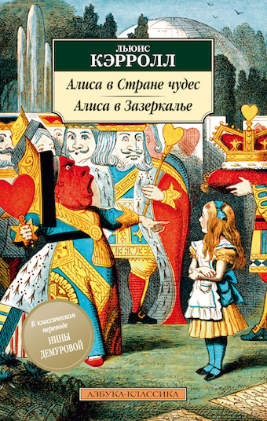2 книга) АЛИСА В СТРАНЕ ЧУДЕС И ЗАЗЕРКАЛЬЕ
Автор: Льюис Кэрролл (Чарлз Лютвидж Доджсон)
Год: 1865
Описание: Любопытство завело Алису сначала в подземную страну, где ее подстерегали неожиданности и фантастические персонажи, а потом девочка попала в Зазеркалье, где пережила немало приключений
Рецензия: Я видела и вижу в историях об Алисе только детскую книжку. Сюрреалистичную, красочную, наполненную образами, местами забавную - но всё же детскую. Мне не импонируют литературоведы, которые хотят найти в песенке про моржа и плотника религиозный или политический подтекст - но я не отрицаю, что это не просто глупый набор слов. В каких-то эпизодах, фразах или сценах действительно заложены более глубокие идеи и мысли, чем может осознать среднестатистический читатель дошкольного возраста, но искать метафору и второе дно в каждой запятой я не вижу смысла. Иногда зонт - это просто зонт, а чёрные занавески выбраны ради немаркого цвета. А вообще, всё это сон, и даже непонятно, кому он снится. Так зачем пытаться понять сны, являющиеся первичным бульоном подсознания, перемешанным, но не взболтанным, где кажущиеся несовместимыми вещи связаны тонкой ниткой давно забытой ассоциации? P.S. В последнее время мне попалось несколько книг с "шахматной" тематикой, но в этом произведении речи не идёт о тактике и стратегии на чёрно-белом поле. В первой части канву сна составляли карты, в этой девочка уснула рядом с шахматной доской, поэтому фигуры ожили, став персонажами её мира.
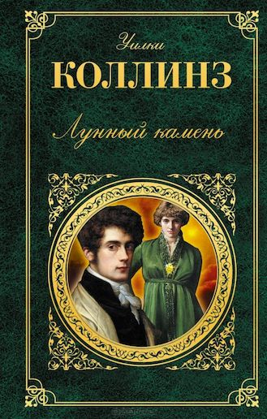3 книга) ЛУННЫЙ КАМЕНЬ
Автор: Уилки Коллинз
Год: 1868
Описание: Индуистский бог Вишну повелел, чтобы "Лунный камень охранялся тремя жрецами день и ночь, до скончания века" и предсказал несчастье тому, кто осмелится им завладеть.
Рецензия: Этот роман был прочитан в юности, тогда же я дала себе честное слово перечитать его позже - он мне не понравился, казалось, я упустила что-то важное. Слово сдержала, а это что-то важное опять не поймала. Посмотрела оценки друзей (да-да, дорогие друзья, ваше мнение ценно для меня) - полный разброс от 5 до 10. Пришло время говорить своё мнение и ставить точку. В книге есть всё, чтобы она была читаемой спустя столетия. Таинственные индусы в Англии, которых боятся и почему-то подпускают близко к себе; сокровище, которое было украдено; любовная линия и вопрос доверия любимому человеку; денежные отношения между родственниками; неожиданные повороты сюжета и сомнительные опыты с наркотиком... Читая книгу, я даже вспомнила, что знаменитый Ш. Холмс был наркоманом - так вот, в этой книге объясняется действие наркотика на мозг человека. Но вот в опыт, проводимый с мистером Блэком, я не поверила. Мне было интересно, как бы этот опыт объяснил медик, но читательское "не верю" тоже разрушает основание произведения. Персонаж, который покорил меня - следователь Кафф. Он походит на следователя, которого волнует всё, кроме расследуемого дела. Он увлекается розами, задаёт невпопад вопросы, иногда суетится, иногда нетороплив - рядом с ним себя чувствуешь как Ватсон с Холмсом. Споря с садовником о том, как вывести определённый сорт розы, он уже сделал выводы о деле. Насколько они верны, предстоит узнать читателю. Что касается самой драгоценности, она просто обречена была быть украденной. Я не знаю, каковы были нравы в то время в Англии, но представлять на всеобщее обозрение такую драгоценность - уже нехорошая идея. Читателя так тщательно готовят к похищению лунного камня, что герои делают всё, чтобы его украли. Как и в любом детективе, преступление тут - показатель отношений, лакмусовая бумажка. Читатели никогда не узнали бы, на что способна служанка или не в меру обидчивый доктор, если бы не было этой кражи. Клубок событий разматывается так, что задевает всех участников романа, и каждый диалог тут, каждое замечание очень важно для понимания сюжета. Но было чувство, что даже в бреду герои говорят и делают то, что надо писателю, а не то, что они сказали и сделали бы в жизни. Книга действительно хороша для своего времени, и многие маститые авторы детективов взяли этот роман на вооружение. Но у меня что-то не ладится с этим писателем. Тут много атмосферы 19-го века - и много нарочитых поступков; чересчур много таинственного - и вроде всё на виду, так, что и читатель может пройти сквозь страницы и украсть желаемое. Но я оставила камень на своём месте, чтобы вы тоже могли наслаждаться романом.
1 книга) СТО ЛЕТ ОДИНОЧЕСТВА
Автор: Агата Кристи
Год: 1967
Описание: Странная, поэтичная, причудливая история города Макондо, затерянного где-то в джунглях, – от сотворения до упадка. История рода Буэндиа – семьи, в которой чудеса столь повседневны, что на них даже не обращают внимания. Клан Буэндиа порождает святых и грешников, революционеров, героев и предателей, лихих авантюристов – и женщин, слишком прекрасных для обычной жизни. В нём кипят необычайные страсти и происходят невероятные события. Однако эти невероятные события снова и снова становятся своеобразным «волшебным зеркалом», сквозь которое читателю является подлинная история Латинской Америки.
Рецензия: Необычная книга. Практически нет диалогов, как будто исторические сведения читаешь. Но нет. Тут просто история рода, но еще и не существующего, вымышленого. Но и это в принципе неплохо, а неординарно и необычно. Но если бы интересно было. Точнее интересно было, но местами и не так чтобы очень. Интриги в принципе практически никакой. Просто история рода. Да и к тому еще скучноватая. Почти у всех членов рода печальная судьба. В основном. Небольшие отрезки времени счастья, любви и все. Каждый второй из рода почти всю жизнь провел затворником. Можно было все намного интереснее придумать. Какие-нибудь любопытные повороты, чтобы интриговало хотя бы чуточку, хотя бы что-нибудь. А то что было? Росли, сексом занимались, рожали, умирали. Много инцеста. Брат с сестрой, племянник с тетей и еще куча других. Почти каждый в роду занимался сексом с близким родственником. Семейка конечно та еще. Одна бабка, которая прожила где-то сто двадцать лет ничем кроме воспитания не занималась. Почти все дети прошли через ее руки. Уже там праправнуки, насколько я понял. В общем мне было в основном скучно. Возникали порой любопытные моменты, но их было не так и много.
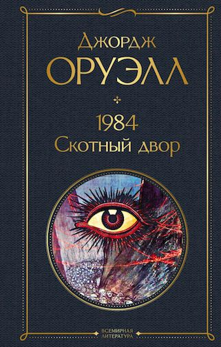2 книга) 1984
Автор: Джордж Оруэлл
Год: 1949
Описание: Своеобразный антипод второй великой антиутопии XX века – романа «О дивный новый мир» Олдоса Хаксли. Что, в сущности, страшнее: доведённое до абсурда «общество потребления» или доведённое до абсолюта «общество идеи»? По Оруэллу, нет и не может быть ничего ужаснее тотальной несвободы...
Рецензия: Жалею лишь о том, что так долго тянула со знакомством с Оруэллом. Такое упущение, аж грустно становится. Ещё при чтении его антиутопии пришла к выводу, что нам вполне по пути, а тут окончательно в этом уверилась. Актуальная даже сейчас притча-сатира, вводящая в уныние из-за всей ситуации, но при этом улыбка сама просится на лицо. Немного безумная улыбка, появляющаяся у каждого человека, осознающего насколько близка описанная ситуация. Вся та же атмосфера, что и в антиутопии, только на этот раз система ещё не развернулась на всю мощь и только зараждается, вся такая в яркой обёртке и с красочными лозунгами. И если животные верят в возможность лучшего общества, то мне, как читательнице, такое недоступно. Ещё не закончилась первая глава, а уже ощущаешь всю бессмысленность переворота. Утопия, не иначе, мир, где никто никого не угнетает и с радостью работает на себя, не отчисляя большую часть заработанного тому, кто этого никогда не заслужит. То, что начиналось, как желание сбежать от гнёта хозяина, закончилось вполне предсказуемо, но не менее драматично. Те, кто спасает рано или поздно становятся правителями и вот уже лозунги меняются, но так словно они всегда были такими. И спаситель становится угнеталем, не отличаемым от предыдущего. Пока читаешь ощущаешь себя осликом Вениамином, всё осознаешь, но видишь, что правда никому не нужна, да и бессмысленно её кому-то доносить, когда слушать никто не собирается. Посвящается всем, кто а раньше было хуже и он виноват во всех наших бедах, даже если давно умер. Стоит только включить телевизор или поговорить с людьми, чтобы услышать эти фразы, а ведь столько лет прошло с момента написания. Вот вам и временная петля, складывается ощущение, что никогда оттуда не выберемся. Вечно застрявшие в слепой вере в старую страшилку. Печальное зрелище. Понравилось чуть больше писательской антиутопии. Не намного, но всё же.
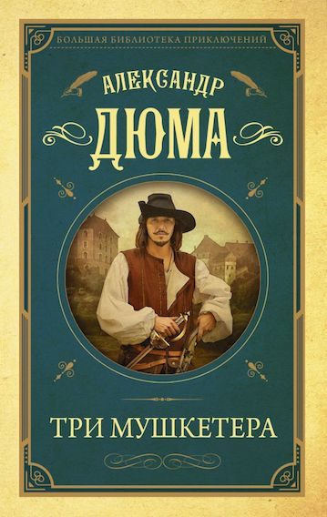3 книга) ТРИ МУШКЕТЕРА
Автор: Александр Дюма
Год: 1844
Описание: «Три мушкетёра» – это история о юном гасконце д’Артаньяне, который, не познав всех радостей любви, оказывается втянут в водоворот политических интриг королевского двора Людовика XIII. В роте королевских мушкетёров де Тревиля он находит себе верных друзей – Атоса, Портоса и Арамиса. Мушкетёры настолько поражены кипучей энергией гасконца и его умением находить неприятности, что принимают самое живое участие не только в многочисленных стычках с гвардейцами кардинала, но и в личной судьбе д’Артаньяна.
Рецензия: Я предвзята в своем отношении как желторотый дилетант, который ничего в своей жизни не видел, не слышал, не знает и тщательно скрывает сей факт. Как 10-летняя девочка, которая шепчет все реплики фильма Юнгвальд-Хилькевича о мушкетерах и д'Артаньяне, медленно, но верно преображаясь в меня 35-летнюю, увеличившую арсенал своего репертуара с первой киноленты до последующих (включая ужасную последнюю). Ребят, я знаю наизусть все, ВСЕ фразы ВСЕХ фильмов советских и российских экранизаций о французских друзьях. Не горжусь, просто факт, подчеркивающий мою (неадекватность) предвзятость-предвзятость. По существу. Ну, это чудесно. Это Дюма. Топим историческими персонажами, событиями, описаниями, эмоциональными красками размазываем сознание читателя, заставляя вылезать из раковины собственной рутины, облагораживаем снисходительным обращением на "вы", постоянно поясняем сюжетные повороты, зачастую поведение героев, объясняем и даже успеваем прочитать мораль на тему и без. Классический Дюма. Как он есть. Я долго не могла заставить себя взять в руки именно эту книгу. Уж слишком мне люб первый фильм и последующие, боялась разочароваться или наоборот... в общем, старалась избегать "Трех мушкетеров" как могла. Однако оказывается фильм и книга ничуть не соперничают друг с другом. Да, конечно, никто здесь не вытягивает высокие ноты на коне в духе Арамиса или не ноет заунывным голосом, закатывая глаза "невеста графа де ля Фер становится женой..." как это делал несравненный Вениамин Смехов, но лихой ус красавца Боярского нет-нет да промелькнет между строк и заставит улыбнуться. Конечно, роман глубже. Насколько вообще может быть глубоким историко-приключенческий роман Дюма-отца. И я говорю это без издевки, а с большим уважением к мэтру. Конечно, повествование многогранно, больше приближено к Парижу 17 века. Появляются слуги, девиз звучит всего лишь раз и более никто его не мусолит (и так мне нравится гораздо больше). Читать рекомендую от души. Всем. От мала до велика. Просто, чтобы развлечься, окрасить осенние будни и полюбоваться на лихих друзей, попереживать, посмеяться. Приключения не заставят скучать, громкие имена, кто знает, чему-нибудь да научат, а высокоморальный тон автора подстегнет к благонравным поступкам. По книгам, господа! По книгам!
1 книга) ОТЦЫ И ДЕТИ
Автор: Иван Тургенев
Год: 1862
Описание: Незадолго до крестьянской реформы в родовое имение своего друга Аркадия приезжает студент-медик и самопровозглашённый нигилист Евгений Базаров. Он отрицает все идеалы и приличия, чем шокирует либерально настроенных «отцов», — но влюбляется в молодую вдову Одинцову, и его образ мыслей не выдерживает столкновения с чувством. Самый публицистический и самый знаменитый роман Тургенева не просто выводит на сцену «нового человека», отражая политическую полемику своего времени, — это книга о столкновении идеолога с собственными идеями.
Рецензия: Писать хоть какой-то, даже малюсенький отзыв о книге, которую еще в школе со всех сторон обмусолили сочинениями – дело неблагодарное. Хочу только отметить, какие необычные ощущения бывают, когда перечитываешь программную классику уже взрослым, когда все сочинения и экзамены, школа и университет позади, тебе не нужно запоминать, какое варенье любил Павел Петрович, даже можно сразу забыть имя и отчество самого Павла Петровича, а еще можно без оглядки на учебники оценивать персонажей как угодно. Вот совсем. Хочешь – учитывай контекст, хочешь – забудь и суди по современным меркам. Хочешь – мысленно обзывай одного душнилой, другого – тряпкой. Хочешь – сочувствуй всем, хочешь – никому не сочувствуй. Очень освобождает. Особенно на примере такого романа, в который вариантов и интерпретаций вместится огромное множество, на любой вкус.
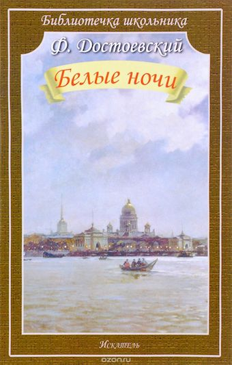2 книга) БЕЛЫЕ НОЧИ
Автор: Федор Достоевский
Год: 1848
Описание: «Белые ночи» — одно из самых поэтических и светлых произведений Федора Достоевского. В нем автор обращается к сентиментальному герою, не нашедшему места в большом городе. Достоевский посвятил повесть своему другу — Алексею Плещееву. Впервые произведение было опубликовано в 1848 году в «Отечественных записках». Главный герой повести, которого Федор Достоевский называет просто Мечтателем, знакомится с Настенькой и влюбляется в нее. Настенька же открывает Мечтателю свою историю любви и рассказывает о Жильце, который снимал комнату в их с бабушкой доме год назад, обещал вернуться за девушкой, но обманул ее.
Рецензия: Повесть о приставучей Настеньке и странном меланхолике Главным героем данной повести является человек без имени и фамилии, непонятной наружности, мужского пола и 26 лет отроду. Он очень любит мечтать (я хорошо отношусь к мечтающим героям), но я думала до пятого (приблизительно) абзаца, что он личность одухотворенная и умная... а нет. Как только главный герой открыл рот, оказалось, что что-то с ним не того, а то как можно было такую околесицу нести при встрече с малознакомой девушкой: — Немножко. Вот, например, отчего вы дрожите? — О, вы угадали с первого раза! — отвечал я в восторге, что моя девушка умница: это при красоте никогда не мешает. — Да, вы с первого взгляда угадали, с кем имеете дело. Точно, я робок с женщинами, я в волненье, не спорю, не меньше, как были вы минуту назад, когда этот господин испугал вас... Я в каком-то испуге теперь. Точно сон, а я даже и во сне не гадал, что когда-нибудь буду говорить хоть с какой-нибудь женщиной. Что это за пафосная глупость? Что за высокопарный идиотизм? Да и кроме того, у него либо проблема с логикой, либо он врет. Он регулярно общается со своей пожилой служанкой, она что не женщина? Меланхолик встретил на улицах Петербурга молодую незнакомку и помог ей, отогнав от нее какого-то пьяного. Дальше Меланхолик с ней (а зовут ее Настенька) встречается несколько ночей подряд. Проводят они время в разговорах. Оказывается, что Настенька (которая несколько лет назад что-то натворила, о чем она говорить не хочет. А что она такое натворила не ясно.) очень контролируема своей бабушкой (но по ночам она свободно ходит и проводит время в круге разных лиц противоположного пола). Бабушка сдает комнату и вот больше года назад молодой жилец начал проявлять к девушке внимание. А она взяла да и прибежала к нему со свертком перед отъездом. Этот жилец и слова ей про любовь не говорил, а она решила навязать свою персону ему пока не поздно (не совсем понятно что она от него хотела, но он обещал на ней жениться, если через год она не передумает). Так вот прошел год, он приехал, как обещал, но с ней не связался (хотя обещал!). И вот Настенька бегает по городу и плачет, а тут главный герой подвернулся. Очень хороший вариант, учитывая, что главный герой странноватый. Его ведь можно использовать в своих целях. Она и использует его в качестве посыльного к тому, к которому раньше умудрилась навязаться. Меланхолик же в девушку вроде как влюбился (хотя мне кажется, что это плод его фантазии. Он "влюбился" бы в любую другую девушку, которая согласилась бы с ним общаться, просто эта подвернулась). И вот представьте себе, тот первый жених Настеньки никак не является на свидание, хотя письма ему активно приходят. И тут уже Меланхолик не выдерживает и признается в своих фантастических чувствах в своей излюбленной высокопарной манере. Настенька решает не теряться и уже соглашается на такой вариант супружества, и тут, когда она со своим новым женихом в обнимку обсуждает о том, как они устроят свой быт, появляется ее первый, и она несется к нему бросается к нему на шею... а потом несется опять к Меланхолику и тоже бросается к нему на шею, целует и сбегает с первым своим женихом (а жениху не было странно, что она проводит время в объятиях другого? Очень странный жених... а где он был столько дней?). Такое впечатление, что эта повесть является пародией на романтические истории. Так как сами герои вызывают удивление, и удивление вызывают их поступки. Никакой любви там нет.
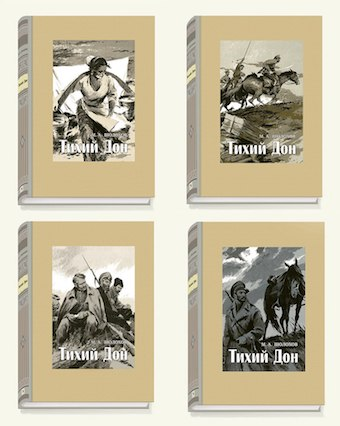3 книга) ТИХИЙ ДОН
Автор: Михаил Шолохов
Год: 1982
Описание: В романе разворачивается масштабное эпическое полотно, повествующее о донском казачестве в период великих испытаний — кровавой Первой мировой и братоубийственной Гражданской войны, когда, по словам самого Шолохова, "в смертной драке брат идет на брата, сын — на отца". Что же происходило в душах людей в это смутное время, как получилось, что самые родные, близкие люди вдруг стали по разные стороны баррикад и превратились в смертельных врагов?.. По глубине осмысления великого перелома в жизни народа, удивительной точности в описании характеров, быта, обычаев казачества этому произведению, пожалуй, нет равных. И какие награды могут быть выше простых слов казачки из Вёшенской станицы: "У донских казаков есть две книги — Библия и "Тихий Дон"".
Рецензия: Каждой книге своё время. Эта фраза вертелась у меня в голове, пока я пыталась читать этот роман. К сожалению не осилила. Я пока малость туповата для такого. Сначала читать было интересно. Весь этот казачий быт, в центре семья Мелеховых, споры, скандалы, интриги... Безумно интересно! Пока не началась война. Вот тут то я и сдулась! Столько всего начало происходить, разные исторические события, в сочетании с украинскими словами, многие из которых я не поняла. Написано очень красиво, читать интересно, но трудно. К такому чтению надо готовиться, и к нему надо приходить в зрелом возрасте. Надеюсь что однажды смогу осилить этот роман. А пока буду пересматривать экранизацию 1958 года. Кстати всем советую. Фильм классный.